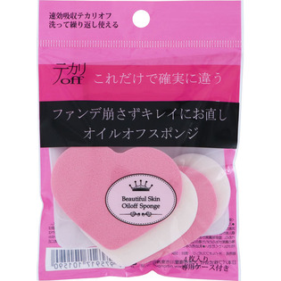
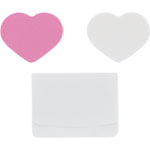

返回列表
产品名称：オイルオフスポンジ

日本パフ オイルオフスポンジ ＿
メーカー 日本パフ
JANコード 4975917101590
商品の特徴
お肌の潤いは逃さず不要な皮脂を吸収し気になるテカリを抑えるスポンジです。
不要な皮脂を吸い取り崩れたメイクを直しファンデーションを肌に再び密着させます。
成分・分量
【素材】
ＳＢＲ
用法及び用量
【使用方法】
テカリが気になる部分をスポンジで軽く押さえてこすらず皮脂を取る。